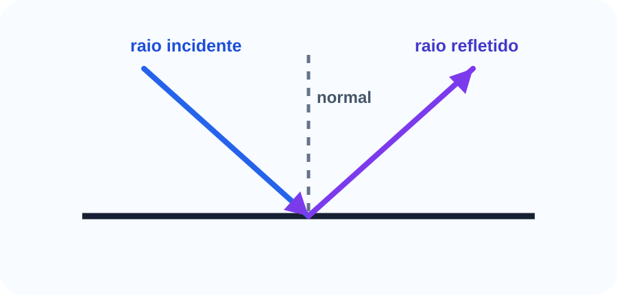

luz, raios luminosos, sombra, penumbra e princípios da óptica geométrica. Material refeito com linguagem didática, matemática revisada, exemplos resolvidos e exercícios comentados.
CursoUniverso Relativo
ÁreaFísica
ÓpticaÓptica 1
Roteiro do bloco
01. Luz e raio luminoso
02. Meios transparentes, translúcidos e opacos
03. Propagação retilínea
04. Sombra e penumbra
05. Câmara escura
Como estudar: leia a explicação, refaça os exemplos sem olhar a resolução e depois tente os exercícios. A matemática fica mais segura quando cada símbolo é entendido antes da substituição.
Introdução
Conceitos Fundamentais de Óptica organiza uma parte importante da Física. Neste bloco, o foco é entender o fenômeno, reconhecer as grandezas, usar unidades corretas e interpretar cada resultado.
Antes de aplicar qualquer fórmula, pergunte: qual é o sistema físico, quais dados foram fornecidos e qual grandeza o problema pede?

Diagrama autoral para raio incidente, raio refletido e normal.
Conceitos principais
Luz e raio luminoso
Este ponto define a linguagem do bloco. Ao estudar luz e raio luminoso, observe quais grandezas aparecem, como elas são medidas e qual relação física conecta os dados.
Meios transparentes, translúcidos e opacos
A ideia central é evitar substituição mecânica. Primeiro interpretamos a situação, depois escolhemos a expressão matemática compatível com o fenômeno.
Propagação retilínea
Sempre escreva as unidades junto dos valores. Isso ajuda a perceber conversões necessárias e evita resultados numericamente corretos, mas fisicamente sem sentido.
Sombra e penumbra
Quando houver direção, sentido, imagem, onda ou troca de energia, desenhe um esquema simples. O diagrama costuma revelar a equação correta.
Câmara escura
Finalize conferindo se o resultado responde exatamente ao que foi perguntado e se a ordem de grandeza é plausível.
Erro comum: copiar uma fórmula antes de entender o que cada símbolo representa. Antes de substituir valores, escreva as unidades e confira se as grandezas pertencem à mesma situação física.
Fórmulas essenciais
Fórmula-chave
Propagação retilínea
em meio homogêneo: trajetória retilínea
meio homogêneomeio com mesmas propriedades em todos os pontos
raio luminosorepresentação geométrica da direção de propagação
Exemplo simples: Sombras nítidas aparecem porque a luz se propaga em linha reta em meios homogêneos.
Fórmula-chave
Câmara escura
hi/ho = di/do
hialtura da imagem
hoaltura do objeto
didistância da imagem ao orifício
dodistância do objeto ao orifício
Exemplo simples: A imagem da câmara escura é invertida.
Exemplos resolvidos
Exemplo 1
Por que a sombra de um objeto pode ser explicada por raios de luz?
Resolução passo a passo:
Em meio homogêneo, a luz se propaga em linha reta.
O objeto opaco bloqueia parte dos raios.
A região sem iluminação direta forma a sombra.
A sombra resulta da propagação retilínea e do bloqueio da luz.
Exemplo 2
Em uma câmara escura, di = 10 cm, do = 100 cm e ho = 1,8 m. Calcule hi.
Resolução passo a passo:
Use hi/ho = di/do.
hi = 1,8 · 10/100.
hi = 0,18 m.
A imagem tem 18 cm.
Erros comuns
Atenção: Confundir raio luminoso com objeto físico.
Atenção: Achar que sombra e penumbra são a mesma coisa.
Atenção: Ignorar que o modelo de raios é uma aproximação geométrica.
Exercícios para fixação
Exercício 1
Por que a sombra de um objeto pode ser explicada por raios de luz?
Resolução completa:
Em meio homogêneo, a luz se propaga em linha reta.
O objeto opaco bloqueia parte dos raios.
A região sem iluminação direta forma a sombra.
A sombra resulta da propagação retilínea e do bloqueio da luz.
Exercício 2
Em uma câmara escura, di = 10 cm, do = 100 cm e ho = 1,8 m. Calcule hi.
Resolução completa:
Use hi/ho = di/do.
hi = 1,8 · 10/100.
hi = 0,18 m.
A imagem tem 18 cm.
Exercício 3
Explique a ideia central de Conceitos Fundamentais de Óptica sem começar por fórmula.
Resolução completa:
Identifique o fenômeno físico estudado.
Cite as grandezas principais.
Finalize conectando conceito, unidade e interpretação.
Resposta esperada: explicação física clara, com grandezas e unidades.
Exercício 4
Aponte um erro comum desse bloco e corrija-o.
Resolução completa:
Escolha uma confusão frequente da seção de erros comuns.
Explique por que ela é incorreta.
Mostre o procedimento correto.
Erro identificado e correção justificada.
Exercício 5
Monte um quadro de dados antes de resolver uma questão numérica do bloco.
Resolução completa:
Liste dados fornecidos.
Converta unidades quando necessário.
Escreva a fórmula somente depois de identificar o pedido.
Quadro organizado com dados, unidade e incógnita.
Resumo final
Óptica geométrica representa a luz por raios.
Em meio homogêneo, a luz se propaga em linha reta.
Sombra e penumbra dependem do tamanho da fonte luminosa.
Câmara escura forma imagem invertida.
Fechamento do bloco: uma resposta de Física só está completa quando traz valor numérico, unidade correta e interpretação do resultado.
Referências das imagens
Reflexão da luz: diagrama autoral criado para o projeto Universo Relativo, arquivo local optica-reflexao.svg.
Logo e identidade visual: Universo Relativo, usados como marca do material didático.